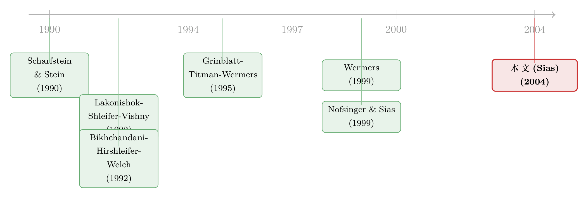

羊群是真的吗？——把「机构跟风」拆成跟自己和跟别人
本文读的是 Sias (2004, Review of Financial Studies)：把「机构是不是羊群」这个吵了三十年的问题，换成一个更干净的问法——本季度「买入比例」会不会延续上季度的「买入比例」。答案是会，相关系数约 0.12，而且这股延续性可以被精确地拆成「机构跟自己」和「机构跟别人」两部分；其中「跟别人」（也就是真正意义上的羊群）占了一大半，且与动量、习惯都关系不大，最像是机构在从彼此的成交里反推信息。
1 一个吵了三十年、却始终没人证实的指控
先讲一个场景。1998 年那个夏天，美股剧烈震荡，电视节目 Wall \$treet Week 的主持人 Louis Rukeyser 对着镜头说了一句很重的话：真正在底部惊慌失措、把市场踩塌的，是那些「神经天生就脆弱」的大机构。报纸跟着起哄——《纽约时报》《底特律自由报》、美联社通稿，口径出奇地一致：别去想什么「典型的散户」了，你脑子里该浮现的是一整群羊。
这是一个流传极广的指控：机构投资者扎堆进、扎堆出同一批股票（也就是「羊群」(herding)），把价格推得忽上忽下，制造了过度波动与市场脆弱。
而且这个指控不是凭空来的。它背后站着一整套漂亮的理论。机构为什么会扎堆？金融学给过至少五种解释：信息瀑布 (informational cascades)——你忽略自己手里那点带噪声的信号，转而跟着大队人马走，因为你觉得别人的成交里藏着你不知道的信息 [Banerjee (1992); Bikhchandani, Hirshleifer, and Welch (1992)]；调查型羊群 (investigative herding)——大家盯着同样的公开信号，于是不约而同地做同一笔交易 [Froot, Scharfstein, and Stein (1992)]；声誉型羊群 (reputational herding)——跟大队伍走错了不丢人，独自走错了要丢饭碗 [Scharfstein and Stein (1990)]；还有潮流/时尚 (fads) 和特征型羊群 (characteristic herding)——大家都被某一类「特征」相似的股票吸引。
注意这五种动机指向的政策含义天差地别：信息瀑布说的是「信息怎样进入价格」，声誉型羊群说的是「代理问题」，潮流说的是「非理性」。能不能把它们分辨开，是这条文献真正的悬念。
理论这么丰满，指控这么响亮，可问题来了——几乎没有人拿出过像样的经验证据。这才是张力所在。Lakonishok, Shleifer, and Vishny (1992)（下称 LSV）亲自下场检验，结论却是泼了一盆冷水：「浮现出来的图景是，机构遵循着五花八门的风格与策略，他们的交易相互抵消……」。Grinblatt, Titman, and Wermers (1995)、Wermers (1999) 接着查，也只找到零星的、系统性很弱的羊群痕迹。
于是一个尴尬的局面出现了：人人都说机构在抱团，可数据一查，抱团就消失了。
2 问题也许不在数据，而在那把尺子
接着，一个自然的问题是：是机构真的不抱团，还是我们量错了？
本文的判断是后者——问题出在那把叫 LSV「羊群度量」的尺子上。前面三篇质疑羊群的论文，用的全是同一把尺子。LSV 的思路是：如果机构在一段时间里扎堆进出同一只股票，那么这只股票在这段时间里，应该「买家明显多于卖家」（或反之）。它度量的是某一窗口内、买卖人数的失衡程度。
听上去合理，但它绕了个弯。羊群的本质是什么？是「一群人先后跟随彼此进出同一批股票」——交易是顺序发生的，A 周一买、B 周二跟着买、A 周三又买。羊群天然是一个时序上、横截面里的跟随现象。LSV 的尺子只看「这段时间里买的人多不多」，却没有直接去看「这一拨人到底是不是在跟着上一拨人走」。
这正是本文最关键的一步：与其测「窗口内的买卖失衡」，不如直接测横截面上的时序依赖——看相邻两个季度之间，机构是不是真的在跟着彼此跑。
怎么测？本文的操作干净得近乎朴素。对每只股票 \(k\)、每个季度 \(t\)，先算出一个「买入比例」——在所有交易这只股票的机构里，有多少比例是买家：
$$ \text{Raw}D_{k,t} = \frac{\text{No. of institutions buying}_{k,t}}{\text{No. of institutions buying}_{k,t}+\text{No. of institutions selling}_{k,t}} $$
这里「买家」的定义很物理：一家机构本季度末持有这只股票的股份比例比季度初高，就算买家；低，就算卖家（比如从持有 IBM 的 0.01% 涨到 0.02%，就是买家）。数据来自机构的 13F 报告。
然后把它标准化（横截面去均值、除以横截面标准差），记为 \(D_{k,t}\)：
$$ D_{k,t} = \frac{\text{Raw}D_{k,t} - \overline{\text{Raw}D_t}}{\sigma(\text{Raw}D_{k,t})} $$
标准化只是线性缩放，不影响相关系数与 \(R^2\)，纯粹是为了让不同季度、不同分组、不同投资者类型的系数能直接比较。
最后，每个季度跑一次横截面回归，把这季度的买入比例回归到上季度的买入比例上：
$$ D_{k,t} = \beta_t\, D_{k,t-1} + \varepsilon_{k,t} $$
60 个季度的数据，能跑出 58 个这样的横截面回归。因为只有一个自变量、且数据已标准化，这个斜率 \(\beta_t\) 就等于横截面相关系数——上季度买入比例高的股票，这季度买入比例是不是也高？
结果一出来，画风全变了。58 个季度的平均系数是 0.1194，t 值 12.67，在 1% 水平上显著为正。如果只保留「至少 5 家机构交易」的股票（剔除噪声更大的冷门股），系数升到 0.1755（t 值高达 25.54）。机构的「买入比例」有着强烈的季度间延续性。 换一把尺子，羊群一下子就显形了。
3 但这还不够：是跟别人，还是跟自己？
然后，问题没有就此结束——反而进入了本文真正精巧的地方。
你发现「这季度买的人多、上季度买的人也多」，这能不能就叫羊群？不能。因为这个正相关里其实混着两股完全不同的力量：
- 一股是机构 A 跟着机构 B进出同一只股票——这才是真正意义上的羊群（herding）；
- 另一股是机构 A 跟着自己上季度的交易走——A 上季度买了 IBM，这季度接着买。这叫「跟随自己的滞后交易」，它会让买入比例同样表现出延续性，但它跟「抱团」一点关系都没有。
这两者在 LSV 的框架里是搅在一起、分不开的。而本文最漂亮的贡献，是证明了横截面相关系数 \(\beta_t\) 可以被代数上精确地拆成这两部分。
直觉是这样的：买入比例 = 一堆「买家虚拟变量」的和除以交易人数。把这个和代进相关系数的定义里展开，相关系数自然就分成「同一个交易者 \(n\) 在前后两季都出现」的项（跟自己）与「交易者 \(n\) 和另一个交易者 \(m\neq n\) 配对」的项（跟别人）。写出来就是下面这个核心分解式：
其中 \(D_{n,k,t}\) 是交易者 \(n\) 在股票 \(k\)、季度 \(t\) 的买家虚拟变量（买为 1、卖为 0），\(N_{k,t}\) 是该股该季的交易者数。两项的结构一模一样，唯一的差别就是内层求和——第一项锁定 \(n=n\)（自己跟自己），第二项扫过所有 \(m\neq n\)（你跟别人）。
这一步为什么关键？因为它把一个含糊的「延续性」，变成了两个可以分别报数、分别检验的渠道。把数据代进去（Panel A，≥1 家机构交易）：
- 总系数
0.1194 - 其中「跟随自己」
0.0617（t 值7.33） - 「跟随别人」即羊群
0.0576（t 值10.12）
两块各占一半左右，而且都显著。换到「≥5 家机构」的样本，羊群那一块（0.1081）甚至明显超过了跟随自己（0.0674）。也就是说：机构买入比例的延续性，相当大一部分确确实实来自机构之间的相互跟随，而不只是各自的惯性。 羊群是真的。
4 反转：那它到底是「跟价格」还是「跟人」？
证明了羊群存在，本文后半程做的全是一件事——追问机构到底在跟随什么。这也是我最喜欢的部分，因为它一层层地把别的解释排除掉。
第一个怀疑：会不会只是动量交易？ 机构都是出了名的「追涨杀跌」者（momentum traders），上季度涨得好的股票大家一起买，看上去就像抱团，其实只是大家不约而同地追同一段历史收益（这正是「特征型羊群」）。本文也确实证实了机构在做动量交易。但关键问题是：把滞后收益放进回归，机构的羊群被它解释掉了多少？答案是——很少。更直接的对照是：机构这季度的需求，与上季度的机构需求的相关，强于与上季度收益的相关。也就是说，机构盯着的更像是「别的机构在干嘛」，而不只是「价格涨了多少」。
这个对照很有分量。如果羊群只是动量的副产品，那机构需求该主要由滞后收益驱动；可数据说，滞后的「机构需求」本身才是更强的预测变量。机构在彼此身上找信号。 （关于「动量到底是谁在交易」，可参见《动量到底是谁干的？——把成交单拆成大小两摞来看》。）
第二个怀疑：会不会是「习惯投资」(habit investing)？ 如果机构都偏好同一类特征的股票，又面临同方向的资金净流入，然后简单地按比例调仓，那么他们也会在相邻季度里「跟着彼此」进出同一批股票——但这只是被动的、由资金流驱动的巧合，不是主动跟随。本文专门检验了「机构调整组合权重」的横截面相关，结论是：几乎看不到羊群是由资金净流入的横截面/时序相关驱动的。 习惯投资这条路也被堵上了。
第三步，也是最妙的一步——按市值分层。 本文借用 Wermers (1999) 的论点：信息瀑布更可能发生在小盘股，因为那里的信号更嘈杂，你更没把握，更倾向于忽略自己的判断去跟别人；反过来，调查型羊群可能更偏大盘股，因为那里信号更清晰，大家更容易独立地解读出同一个结论。那么羊群在哪一头更强？
结果：各种市值都有羊群，但小盘股最强。再加上一个佐证——机构需求与同期收益正相关、与未来一年收益弱正相关（而非负相关）。如果机构是在追逐毫无信息含量的潮流，那抱团之后价格该反转、未来收益该为负；可数据里没有这个反转。没有反转，意味着羊群更像是信息被逐步定价进价格的过程，而不是非理性的潮起潮落。
把这几块拼起来，本文落到了它的核心结论：最贴合数据的，是「机构从彼此的成交里推断信息」这一类模型（信息瀑布）。 不是动量，不是习惯，不是纯潮流——是信息。
5 余下的两个切片：时间与类型
本文最后还切了两刀，让画面更完整。
按时间看：机构羊群在 1980 年代比 1990 年代更强，而这个下降主要来自最大市值股票里羊群的衰减。同时，随着市场流动性改善，机构越来越不跟随自己的滞后交易了——流动性好了，你不必再把一笔大单拆到好几个季度慢慢建仓。
按类型看：CDA-Spectrum 把机构分成银行信托部、保险公司、共同基金、独立投资顾问、未分类五类。每一类都有统计上显著的羊群，但银行信托部门的羊群证据最强。而且，机构更倾向于跟随同类机构，而不是不同类的机构——这本身就暗示着，跟随并非随机的噪声，而是带着某种「我相信和我处境相似的人看到了什么」的结构。
6 文献脉络
把这条线索捋一捋，会看到一个很经典的「理论先行、经验滞后、最后被一把新尺子救活」的故事。
最早是理论铺路：Scharfstein and Stein (1990) 给出声誉型羊群，Banerjee (1992) 与 Bikhchandani, Hirshleifer, and Welch (1992) 给出信息瀑布，Froot, Scharfstein, and Stein (1992) 给出调查型羊群。理论的「军火库」很快堆满了。
接着是经验的挫败。Lakonishok, Shleifer, and Vishny (1992) 造出了那把被沿用最久的「羊群度量」，却得出机构交易「相互抵消」的结论；Grinblatt, Titman, and Wermers (1995)、Wermers (1999) 接力检验，同样只找到微弱的系统性羊群。与此同时，Nofsinger and Sias (1999) 等一批文章在「机构持股变化与同期收益强正相关」上达成共识，但这只能说明机构同向交易影响了价格，无法证明他们在抱团——因为总有些股票纯靠运气也会出现净的持股变化。

本文 Sias (2004) 站的位置，是把度量方式整个换掉：不测窗口内的买卖失衡，而是直接测相邻季度间买入比例的横截面相关，并把它代数分解为「跟自己」与「跟别人」。同期 Pirinsky (2002) 用个股层面的时序相关也得到了一致的结论，算是一个独立的旁证。这条线之后，机构羊群的研究就从「有没有」转向了「为什么」与「谁在跟谁」。
7 评论与延伸（Q&A + 研究方向）
(a) 几个可能的疑问
Q：这个「相关系数」凭什么就等于回归斜率，又凭什么能被拆开？
因为自变量只有一个、且数据被标准化到零均值单位方差，单变量 OLS 的斜率在代数上就等于两变量的相关系数（论文附录给了证明）。而买入比例本身是「买家虚拟变量之和 / 交易人数」，把这个和代入相关系数定义并展开，自然分裂成「同一交易者前后配对」和「不同交易者配对」两组项——前者是跟随自己，后者是跟随别人。这是一个恒等式，不是又一个回归设定，所以分解本身没有识别上的争议。
Q：和 LSV 的羊群度量到底差在哪？为什么结论会反过来？
LSV 测的是「某一窗口内买家是否系统性多于卖家」，是一个截面失衡的概念；本文测的是「买入比例在相邻季度间是否延续」，是一个时序依赖的概念。羊群的定义本就是「先后跟随」，所以时序依赖更贴题。LSV 在交易相互抵消、净失衡不大时会读出「无羊群」，但只要跟随是顺序发生的，本文的尺子仍能捕捉到它。换尺子，是结论反转的根本原因。
Q：既然机构在做动量交易，怎么排除羊群只是动量的伪装？
两条证据。其一，把滞后收益放进来后，能解释的羊群非常有限；其二，更直接地，机构本季需求与滞后机构需求的相关，强于与滞后收益的相关。如果羊群只是动量副产品，主导变量该是滞后收益而非滞后机构需求。事实相反，说明机构在彼此身上、而不只是在价格上找信号。
Q：用季度末的 13F 持仓来定义「买/卖」，会不会把季度内的来回交易整个漏掉？
会，这是数据的硬约束。一个机构在季度内先买后卖、期末持股不变，就既不算买家也不算卖家，完全隐身。这意味着本文度量的是低频、净方向的跟随，对高频的日内羊群无能为力。好处是它干净；代价是它只能讲「季度尺度上的抱团」，不能外推到「底部那一刻谁在踩踏」那种叙事。
Q：「小盘股羊群最强 → 信息瀑布」这个推断，会不会太快了？
这是全文识别上最软的一环。「小盘=信号更噪=更易瀑布」是一个借来的先验 [Wermers (1999)]，而小盘股同时还更不流动、机构更少、度量噪声更大，这些都可能机械地放大或扭曲估计。论文用「未来收益不反转」来加固「信息而非潮流」的解读，但「信息瀑布 vs 调查型羊群」这对孪生兄弟，靠市值分层来分辨，证据是间接的、暗示性的，而非决定性的。
Q：羊群是好事还是坏事？这篇文章站哪一边？
本文相对克制。它没有断言羊群制造了过度波动或市场脆弱——恰恰相反，「未来收益不反转」更支持羊群是信息进入价格的过程，而非破坏性的踩踏。这其实是对开篇那条媒体指控的一个温和反驳：机构确实在抱团，但抱团未必等于非理性地搅乱市场。
(b) 几个可能的研究问题与提案
1. 把这把尺子搬到公司债市场。 【经济故事】公司债市场信号更嘈杂、信息更分散、机构主导程度远高于股市，正是「从彼此成交里推断信息」最该发生的地方；而债券的流动性又随评级、久期剧烈变化，能天然地做异质性检验。 【可行性】中。需要 TRACE 成交 + 机构持仓（如保险公司 NAIC、基金 N-PORT），把「买入比例」的横截面时序相关算出来并做同样的「跟自己/跟别人」分解。难点是债券的持仓频率与口径不如 13F 整齐，需要仔细处理同一发行人多只债券的聚合。（与《谁在持有这张债券，决定了它的价格》的视角天然互补。）
2. 外资 vs 本土机构：谁跟谁？ 【经济故事】本文发现机构更倾向跟随同类机构。若把「类型」换成「外资/本土」，就能问：外资是在跟随本土机构（推断本地信息），还是自成一群？这直接关系到「外资是不是信息劣势方」的长期争论。 【可行性】中。需要带国别标签的机构持仓（如韩国、台湾的逐笔或月度持仓数据），识别策略可沿用本文的横截面相关分解，再按外资/本土交叉配对。数据可得性是主要瓶颈。
3. 共同持有人与跟随的传导速度。 【经济故事】如果机构是从彼此成交里推断信息，那么「共用同一批股东」的公司之间，信息与跟随是否传得更快或更慢？这能把「羊群」与「信息扩散」两条线接起来。 【可行性】高。13F 数据本身就能构造公司间的共同持有人网络，再把本文的滞后机构需求相关放到网络维度上估计。（可与《被「同一批股东」拖慢的消息》对照。）
4. 流动性改善如何改写羊群——一个更干净的识别。 【经济故事】本文已观察到「流动性变好 → 机构更少跟随自己的滞后交易」（因为不必再拆单慢慢建仓）。能否用一次外生的流动性冲击（如十进制报价改革、tick size 变化）做事件研究，把这条相关变成因果？ 【可行性】高。十进制化（2001）等制度变更提供了清晰的时间断点，可在改革前后比较「跟自己」分量的变化，识别相对干净。
8 我的判断
这篇文章的贡献，不在于又跑了一个回归，而在于重新定义了问题。它指出，过去十年「机构不抱团」的共识，很可能只是被一把测错了维度的尺子误导；只要把「羊群」如其定义那样理解为「横截面上的时序跟随」，并且——这才是真正聪明的地方——用一个恒等式把延续性精确地拆成「跟自己」与「跟别人」，结论立刻反转。这种「换一个度量、配一个干净分解」的做法，方法论上的示范意义甚至超过结论本身。
但我也有两点保留。其一，对动机的识别是软的。从「跟自己 vs 跟别人」的分解到「这是信息瀑布」，中间隔着好几层借来的先验（小盘更噪、未来不反转），每一层单独看都成立，但它们排除竞争假说的力度是暗示性的，而非决定性的；信息瀑布与调查型羊群这对孪生兄弟，本文其实没能真正掰开。其二，季度末 13F 的低频本质，决定了它讲不了媒体最关心的那个故事——「崩盘那一刻谁在踩踏」。它度量的是季度尺度上从容的、净方向的抱团，与日内恐慌是两回事。
后续我最想看到的，是两件事：一是把这套「相关 + 分解」搬到更高频、更细颗粒的成交数据上（哪怕只是某个交易所的逐笔），看跟随到底发生在什么时间尺度上；二是引入真正外生的信息冲击，直接检验「机构是不是在从彼此成交里学信息」这个机制本身，而不是靠市值分层去间接推断。把「有没有羊群」问清楚之后，「羊群究竟在学什么」才是更难、也更值得做的那一半。
参考文献
- Banerjee, A. (1992). A Simple Model of Herd Behavior. American Economic Review 88, 724–748.
- Bikhchandani, S., Hirshleifer, D., and Welch, I. (1992). A Theory of Fads, Fashion, Custom, and Cultural Change as Informational Cascades. Journal of Political Economy 100, 992–1026.
- Froot, K. A., Scharfstein, D. S., and Stein, J. C. (1992). Herd on the Street: Informational Inefficiencies in a Market with Short-term Speculation. Journal of Finance 47, 1461–1484.
- Gompers, P., and Metrick, A. (2001). Institutional Investors and Equity Prices. Quarterly Journal of Economics 116, 229–260.
- Grinblatt, M., Titman, S., and Wermers, R. (1995). Momentum Investment Strategies, Portfolio Performance, and Herding: A Study of Mutual Fund Behavior. American Economic Review 85, 1088–1105.
- Lakonishok, J., Shleifer, A., and Vishny, R. W. (1992). The Impact of Institutional Trading on Stock Prices. Journal of Financial Economics 32, 23–43.
- Nofsinger, J., and Sias, R. W. (1999). Herding and Feedback Trading by Institutional and Individual Investors. Journal of Finance 54, 2263–2295.
- Pirinsky, C. (2002). Herding and Contrarian Trading of Institutional Investors. Working paper, Texas A&M University.
- Scharfstein, D. S., and Stein, J. C. (1990). Herd Behavior and Investment. American Economic Review 80, 465–479.
- Sias, R. W. (2004). Institutional Herding. Review of Financial Studies 17(1), 165–206.
- Wermers, R. (1999). Mutual Fund Trading and the Impact on Stock Prices. Journal of Finance 54, 581–622.